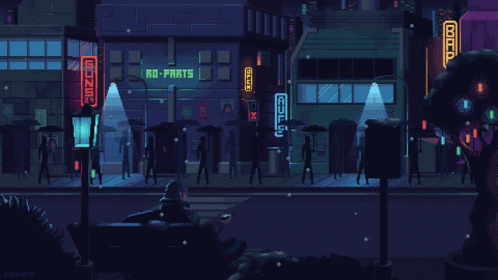

Mistérios da Mansão Esquecida

Desconfiado das intenções sombrias da seita, você recusa a oferta, decidindo não se envolver com seus segredos perturbadores. Ignorando os protestos do líder e dos membros da seita, você se afasta, determinado a escapar da influência corruptora da mansão. Você chega à entrada principal da mansão e irrompe pela porta, encontrando-se finalmente ao ar livre. Você parte para um novo amanhecer, livre para forjar seu próprio destino longe das sombras que uma vez o envolveram.